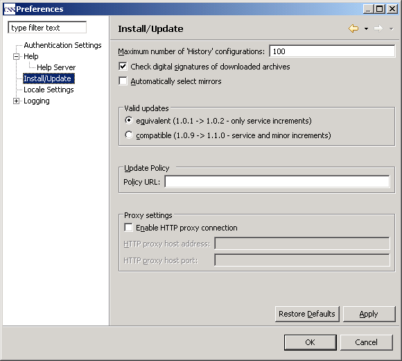

Install/Update Settings

Install/Update Settings |
|

Option |
Description |
Default |
Maximum number of 'History' configurations |
Maximum number of configurations you want maintained in the configuration history. These configurations are maintained to allow you to revert to a previous configuration of installed feature versions. |
100 |
Check digital signatures of downloaded archives |
This option will check for digital signatures of downloaded archives. |
On |
Automatically select mirrors |
If off, you will be prompted by every update to select a server to download the updates from. |
Off |
Valid updates |
Assuming that feature versions use the form 'major.minor.service', you can select what update level you want to choose from: |
equivalent |
Update Policy |
The update policy URL that controls the redirection of update sites within an organization. |
No policy |
Proxy settings |
Allows connection to the remote server from behind the firewall. When enabled, proxy host address (required) and port number (optional) can be specified. |
No proxy |